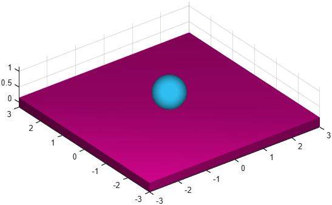

Measure
Class phx.Measure | Superclass: phx.base.Object
phx.Measure measures mutual kinematic quantities between two
moving bodies: the distance, the relative position and the relative velocity of two measuring
points, expressed in the global frame or in the local frame of either body. The quantities are
intended to be read immediately during the simulation (e.g. from a
phx.Function controller or a
phx.Logger). The measure is drawn into the scene as a dashed line
between the two points.
m = phx.Measure(bodyA,bodyB) creates a measuring object between
the points of origin of the two bodies. Use PointA and
PointB for custom measuring points.
| Argument | Type | Description |
|---|---|---|
| bodyA, bodyB | phx.Body (scalar) | The two bodies between which the quantities are measured. |
| Property | Type / Default | Description |
|---|---|---|
| PointA | [0 0 0] | Measuring point in the local frame of the first body. |
| PointB | [0 0 0] | Measuring point in the local frame of the second body. |
| Overlay | false | Draw the measure as an overlay (always on top). |
| Distance | double (read-only) | Scalar distance between both measuring points, m. |
| Position | 1×3 double (read-only) | Position vector between both measuring points in the global frame, m. |
| PositionInA | 1×3 double (read-only) | Position vector of the second measuring point in the local frame of the first body, m. |
| PositionInB | 1×3 double (read-only) | Position vector of the first measuring point in the local frame of the second body, m. |
| Velocity | 1×3 double (read-only) | Velocity vector between both measuring points in the global frame, m/s. |
| VelocityInA | 1×3 double (read-only) | Velocity vector of the second measuring point in the local frame of the first body, m/s. |
| VelocityInB | 1×3 double (read-only) | Velocity vector of the first measuring point in the local frame of the second body, m/s. |
clf; view(3); axis equal; grid on; camlight headlight; ball = phx.Body("Position", [0 0 5], "Shape", {"Sphere"}); floor = phx.Body("Type", "static", "Shape", {"Box", "Size", [6 6 0.3]}); m = phx.Measure(ball, floor, "PointB", [0 0 0.15]); sim = phx.Simulation; sim.step(1, 200, 1); disp(m.Distance); % current gap between ball center and floor surface disp(m.Velocity); % relative velocity in the global frame delete(sim);

Distance and Velocity keep reporting the gap and the relative velocity.